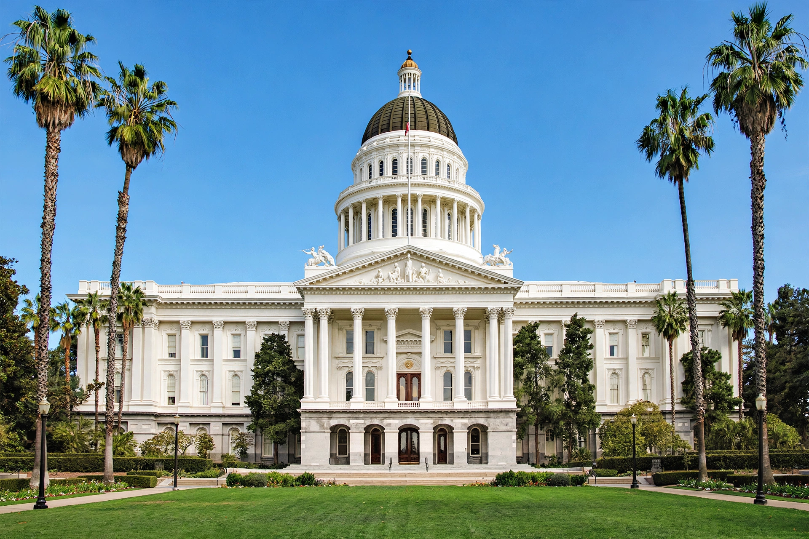

The California State Legislature is the bicameral state legislature of California, consisting of the California State Senate (40 members) and the California State Assembly (80 members). It meets at the California State Capitol in Sacramento.

Senators serve four-year staggered terms; Assembly members serve two-year terms. Since a 2012 reform, legislators may serve up to 12 years in either house combined. California has one of the few full-time, highly paid professional legislatures in the US, in session roughly from December/January to September.
Bills pass both houses and go to the governor, who may sign or veto; a two-thirds vote overrides. The legislature also places propositions before voters, alongside California's direct-democracy initiative process. Its districts are drawn by an independent Citizens Redistricting Commission created by voters in 2008–2010. Sessions are numbered in two-year terms dating from statehood in 1850, when the first legislature met in San Jose before the capital settled in Sacramento. See State Senate and State Assembly.